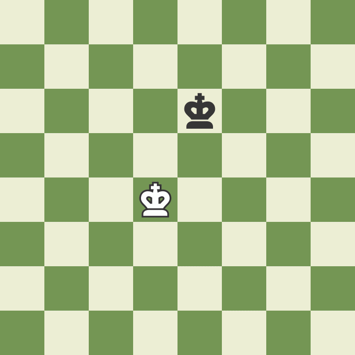

1ère étape : Préparer l'échiquier
Au début de la partie, l'échiquier est placé de manière à ce qu'une case blanche se trouve dans le coin inférieur droit du camp de chaque joueur.
Les pièces sont ensuite disposées de la même manière à chaque début de partie. La deuxième rangée (ou ligne) est occupée par les pions. Les tours occupent les coins, puis les cavaliers viennent à leur côté, suivis des fous, de la dame et enfin du roi, la dame devant se trouver sur une case de sa couleur (dame blanche sur case blanche, dame noire sur case noire).
2ème étape : le déplacement des pièces
Chacune des 6 sortes de pièces se déplace différemment. Les pièces ne peuvent pas en traverser d’autres (bien que le cavalier puisse sauter par-dessus) et ne peuvent jamais partager une case avec une pièce de leur propre camp. En revanche, elles peuvent prendre la place d’une pièce adverse en la capturant. Le but du déplacement des pièces est de les mettre en position d’en capturer une autre (en atterrissant sur sa case et en la remplaçant), de défendre leurs alliées contre la capture, ou de contrôler des cases importantes.
Comment se déplace le roi
Bien que le roi soit la pièce la plus importante, c’est aussi l’une des plus faibles. Il ne peut bouger que d’une case dans n’importe quelle direction : vers le haut, vers le bas, sur le côté ou en diagonale. Le roi n’a pas le droit de se placer sur une case où il serait en échec (là où il pourrait être capturé). Quand une autre pièce l’attaque, cela s’appelle « échec au roi ».

Comment se déplace la dame
La dame est la pièce la plus forte. Elle peut se déplacer dans toutes les directions : vers l’avant, vers l’arrière, sur le côté ou en diagonale, aussi loin que le joueur le souhaite à condition de ne pas passer par-dessus d’autres pièces. Comme c’est le cas pour toutes les pièces, lorsque la dame capture une pièce adverse, elle s’arrête sur la case de la capture. Remarquez que lorsque la dame blanche capture la dame noire, le roi noir est forcé de bouger.
Comment se déplace la tour
La tour bouge aussi loin que le joueur le désire mais seulement en avant, en arrière et sur les côtés. Les tours sont particulièrement efficaces quand elles se protègent mutuellement et opèrent ensemble !
Comment se déplace le fou
Le fou se déplace aussi loin que le joueur le souhaite, mais uniquement en diagonale. Chaque fou commence sur une case d’une couleur (noire ou blanche) qu’il ne quittera jamais. Les fous sont efficaces ensemble, car chacun couvre les cases auxquelles l’autre n’a pas accès.
Comment se déplace le cavalier
Les cavaliers se déplacent d’une manière particulière par rapport aux autres pièces : ils bougent de deux cases dans une direction, puis d’une à 90 degrés, comme pour former un « L ». Les cavaliers sont aussi les seuls autorisés à passer par-dessus les autres pièces, quel que soit leur camp.
Comment se déplace le pion
Les pions sont particuliers, car ils ne capturent pas de la même manière qu’ils se déplacent : ils bougent vers l’avant et attaquent en diagonale. Les pions ne peuvent avancer que d’une case à la fois, sauf lors de leur premier déplacement, où il leur est permis d’avancer de deux cases. Ils ne peuvent capturer que sur l’une des deux cases situées en diagonale devant eux. Ils ne peuvent ni bouger, ni capturer en arrière. Lorsqu’une pièce se trouve sur la case juste devant eux, ils sont bloqués, ne pouvant ni la capturer ni passer par-dessus.
3ème étape: Qui joue en premier aux échecs
Le joueur qui dispose des pièces blanches joue toujours en premier. Elles sont donc en général attribuées au hasard, souvent à pile ou face ou en demandant à l’un des joueurs de deviner la couleur du pion caché dans la main de l’autre. Les blancs jouent alors un coup, puis les noirs, puis les blancs à nouveau, et ainsi de suite jusqu’à la fin de la partie. Avoir le trait au début du jeu constitue un petit avantage, le camp des pièces blanches ayant l’opportunité d’attaquer plus vite.
4ème étape : Passage en revue les règles pour gagner une partie d’échecs
Il existe deux façons de terminer une partie d'échecs : par échec et mat, ou en faisant nulle.
Comment faire échec et mat
Le but de la partie est de mettre le roi adverse échec et mat. Cela se produit lorsque le roi est mis en échec et ne peut pas s’échapper. Il n’y a que trois façons de soustraire le roi à l’échec:
- le déplacer (mais sans roquer !),
- parer l'échec avec une autre pièce,
- ou capturer la pièce qui donne l’échec.
Quand aucune de ces actions n’est possible, la partie est finie. Habituellement, le roi n'est pas capturé ni retiré de l'échiquier, la partie est simplement déclarée terminée.
Exemple du mat du Berger
Comment faire nulle
Parfois, la partie d’échecs ne s’achève pas sur une victoire, mais sur une partie nulle. Il existe 5 manières d’arriver à une telle situation :
- Le jeu aboutit à une impasse quand l’un des deux joueurs ne peut effectuer de coup légal à son tour de jeu, bien que son roi ne soit pas en échec. C’est ce qu’on appelle le pat.
Avec le coup Dame en C7, les noirs ne sont pas menacés et ne peuvent pas jouer. La partie est déclarée nulle par pat.
- Les joueurs peuvent se mettre d'accord pour faire nulle et arrêter de jouer.
- Il n’y a pas suffisamment de pièces sur l’échiquier pour forcer un mat (par exemple: un roi et un fou contre un roi).
- Le joueur peut demander la nulle lorsqu'une même position est répétée trois fois (mais pas nécessairement trois fois de suite).
- Cinquante coups ont été joués sans qu'un pion ait été déplacé ni qu'une capture de pièce ait eu lieu.